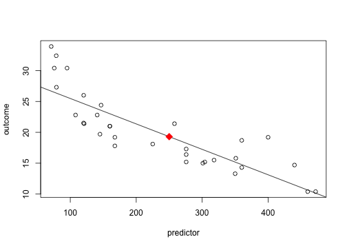

Slide 2 - Overview
The Simple Regression Modeler is a Shiny application lets you choose one of the built-in R data sets, select an Outcome variable and a Predictor variable and a new predictor value. It then creates a plot for you including the regression line and a predicted outcome for the value you provided.
The Outcome and Predictor input selections are automatically populated for you from the data set, so you don't need to investigate it yourself. The predicted outcome value is automatically set to the mean of the selected Predictor which you can then adjust to any value you choose.
The Simple Regression Modeler can be found at my shinyapps.io page.
Slide 3 - Design
The Simple Regression Modeler Shiny application consists of a side panel and a main panel. The side panel has three dropdown selector inputs and one numeric text input. The main panel shows the plotted result (or an error message if an invalid selection was made.)
The side panel inputs are as follows:
- Dataset: This is a dropdown consisting of many of the built-in R datasets.
- Outcome: List of variables in the dataset, automatically populated.
- Predictor: List of variables in the dataset, autoomatically populated.
- Pedict: A value for which an new outcome will be predicted.
The main panel consists of text describing the purpose of the application and a plot based on the values selected by the user. The plot includes a regression line and the predicted outcome.
Slide 4 - Example of Server Calculation Plotting Code
outcome <- mtcars$mpg; predictor <- mtcars$disp; predict <- 250;
model <- lm(outcome ~ predictor); plot(x = predictor, y = outcome)
abline(model); points(x = predict, y = predict(model, newdata =
data.frame(predictor = predict)), pch=18, col="red", cex = 2)

Slide 5 - Image of App